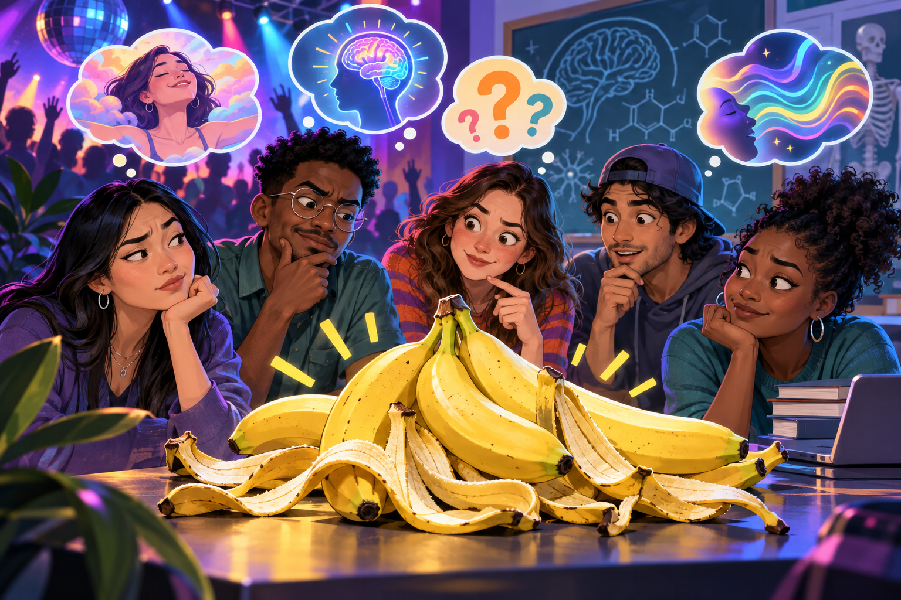
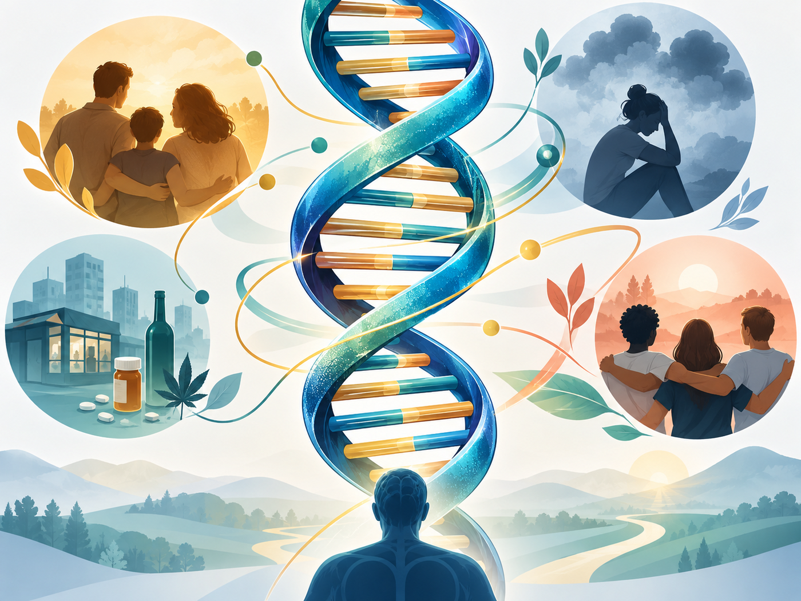

Body and brain
How do genes, receptors, reward learning, tolerance, withdrawal, and stress systems affect vulnerability?
Biological, psychological, behavioral, cognitive, and sociological theories illuminate different parts of drug use and addiction. No single lens explains every person or every stage.

In 1967, a counterculture hoax claimed that a psychoactive substance—soon nicknamed “bananadine”—could be extracted from banana peels. The banana provided no intoxicating drug. Yet the rumor offers a useful thought experiment: if people expect euphoria in a party, concert, or rave setting, some may interpret excitement, dizziness from smoke, group energy, or ordinary bodily sensations as evidence that “it worked.”
This does not mean drug effects are imaginary. Pharmacology, dose, route, metabolism, health, and interactions are objective parts of the experience. But expectancy, learned interpretation, companions, setting, and culture can change what a person notices, how sensations are labeled, and whether the experience feels pleasurable, frightening, or meaningful.
What chemical is present, at what dose, and by what route?
What does the person expect, fear, remember, or want?
What do the group, place, music, and situation teach the person to feel?
Historical background: the 1960s banana-peel hoax.
Select a lens to highlight the questions it asks.
How do genes, receptors, reward learning, tolerance, withdrawal, and stress systems affect vulnerability?
How do emotion, personality tendencies, expectations, reinforcement, coping, and cognition shape behavior?
How do relationships, norms, inequality, institutions, labels, opportunity, law, and culture shape the choices people perceive and make?

Genes can influence vulnerability; they do not write a predetermined future. Genetic variation may affect metabolism, stress response, impulsivity, receptor systems, or sensitivity to reward. Environment, development, drug exposure, and protective relationships influence whether risk becomes behavior or disorder.
The moving marker represents signaling through a simplified reward-learning circuit. Dopamine helps tag cues and actions as worth noticing and repeating; it is not simply a “pleasure chemical.”
Repeated strong signals can strengthen cue learning and motivation.
Each row shows a simplified synapse. The yellow dots represent dopamine; the complete effects involve multiple circuits and transmitters.
Cocaine blocks dopamine transporters. Reuptake slows, dopamine accumulates outside the neuron, and signaling lasts longer. It also affects norepinephrine and serotonin transporters.
Methamphetamine enters terminals, disrupts vesicular storage, increases cytosolic dopamine, and can reverse transporter direction—producing a large, longer-lasting signal.
Mu-opioid receptor activation can reduce inhibitory GABA signaling onto dopamine neurons, indirectly increasing dopamine. Opioids also act directly in pain and brainstem breathing circuits; fatal respiratory depression is not explained by dopamine.
Classical psychoanalytic accounts proposed that unresolved unconscious conflicts, fixation, or difficulties regulating distress could make drug use symbolically or emotionally useful. These claims influenced treatment history, but many are difficult to test and should not be presented as settled causes.
Research associated with Jerome Jaffe and later investigators examined traits such as impulsivity, aggression, anxiety, sensation seeking, and antisocial behavior. Some traits correlate with particular risks or patterns, but there is no single “addictive personality,” and people who use the same drug do not share one personality type.
McAuliffe and Gordon’s reinforcement account of opiate addiction combined more than one consequence of use. The model below separates the learning processes.
Use adds something experienced as rewarding: euphoria, calm, social confidence, or pain relief.
Use removes or reduces something aversive: withdrawal, anxiety, distress, or physical discomfort. “Negative” means removal—not punishment.
Correction to older slides: the 1980 publication is attributed to William E. McAuliffe and Robert A. Gordon.
People learn associations between cues, expected effects, withdrawal relief, and drug use. Attention and decision-making can become narrowed toward immediate consequences while delayed values receive less weight.
“This brings pleasure.”
“This ends withdrawal.”
“This is how I cope.”
Relationships, identity, health, faith, purpose, safety, work, creativity, or another personally meaningful future can support new choices and routines.
Friends or groups teach techniques, definitions, expected effects, and whether use is approved or discouraged.
Example: A new member learns what sensations “count” as enjoyable and how to manage them.
Blocked opportunities and conflict between cultural goals and accessible institutionalized means can create pressure toward different adaptations.
Example: A person accepts financial success but encounters restricted education and employment pathways.
Inner and outer controls, plus attachment, commitment, involvement, and belief, can restrain behavior; weak or disrupted controls may make deviation more likely.
Example: A trusted mentor and meaningful role provide reasons and support to avoid risky use.
Being defined as “an addict” or “deviant” can alter identity, opportunity, relationships, surveillance, and future behavior.
Example: A record or stigma closes conventional opportunities and deepens exclusion.
Power shapes which substances and users are defined as dangerous, medical, respectable, or criminal—and whose harms receive attention.
Example: Similar conduct receives different responses across class or racialized groups.
Groups develop argot, roles, rituals, risk rules, and explanations that make behavior seem reasonable within the group.
Example: Members distinguish “responsible insiders” from outsiders they view as reckless.
A theory identifies relationships that can be examined with evidence. It does not diagnose an individual, excuse harm, or prove that one factor inevitably causes drug use.
Previous: Section 6, Drug-Using Groups and Subcultures · Return to all sections
Content reviewed: September 2026. This educational coursebook does not provide medical or legal advice.